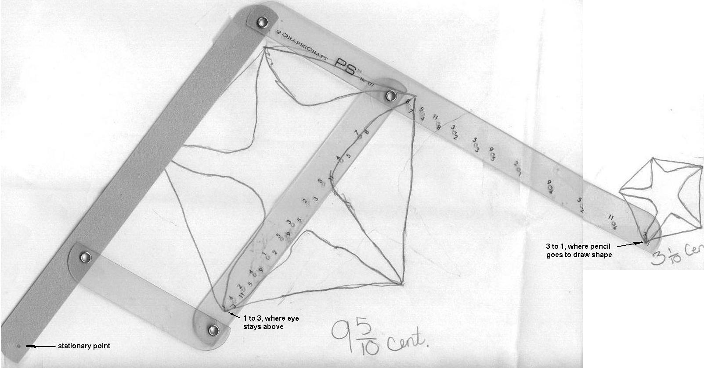

Sheri reduces the size of a shell with a Pantograph

I used the Pantograph to convert the big star to the little star!
See the IES Java applet for the pantograph.
This pantograph was made by GRAPHICRAFT, Westport, CT and was purchased at a local art supply store.
See Roxana's enlarging Bugs Bunny
Back to Patterns
in Mathematics
Sheri
writes 64 using exponents
Sheri
solves the quadratic equation x2 - x - 1 = 0
Sheri
uses the quadratic formula to find base for Don's age of
114? = 7110
Sheri
finds the measure of an inscribed angle
Sheri
uses binary numerals to make the Magic Number Game cards
Sheri
changes the shape of a dog using matrices
Sheri
moves a parabola and finds the equation
Sheri
finds the ratio of The Volume of a Pyramid / The Volume of a Cube (3 ways)
Sheri
works with the sand pendulum
Sheri
figures out a rule for The Tower Puzzle
Sheri
starts Trig